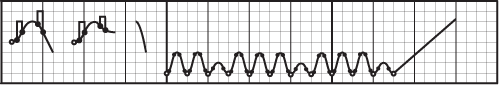

What's the idea?
We're creating a format for describing turntablism, as well as tools for recording, analyzing, sharing, and even recreating scratch performances them with robot arms. We want to do for turntablism what Graffiti Markup Language has done for tagging.
News
Jan 26-28, 2012: Kyle and Jamie will be participating in the Art Hack Day in NYC, developing and demonstrating ScratchML technology.
Jan 22, 2012: this site is finally online.
How does this work?
We've been experimenting with a bunch of techniques for recording performances. From open-source decoding of timecoded vinyl, to camera-based techniques, cross- fader hacking, and even reverse engineering the digital output from high-end mixers. We'll have some optical mouse parts to play with, too.
How can I help?
Our goal for art hack day is to release tools and tutorials for recording data, and have an interface for sharing it on the web. We're going to develop a few different code, or electronics. We'll also need people to play with and document those tools: musicians, artists, and designers.
What are those squiggly lines in the grid?
That's Turntablist Transcription Methodoogy (TTM). Each curve represents the move- ment of vinyl over time, while breaks in the lines represent crossfader movement. It's not exactly what we're going for, but it's a good way to start thinking about the data we're recording, sharing, and analyzing.
Who is involved?
ScratchML is the brainchild of Michael Auger, Jamie Wilkinson and Kyle McDonald. Thanks and shoutouts to Kirk Moreno.
The idea for ScratchML is as old as GML, but owes a lot of inspiration and credit to other work in the turntable-capture space: TTM, Ms. Pinky and many others.